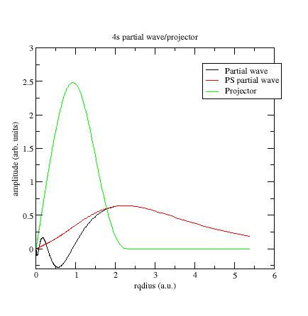

This lesson aims at showing how to compute atomic data files for the projector-augmented-wave method.
You will learn how to generate the atomic data and
what the main
variables are to govern their softness and transferability.
It is supposed you already know how to use ABINIT
in the
PAW case
This lesson should take about 1h30 to be done.
Choose and define the concerned chemical species (name and atomic number).
Solve the atomic all-electrons problem in a given atomic configuration. The atomic problem is solved within the DFT formalism, using an exchange-correlation functional and either a Schrödinger (default) or scalar-relativistic approximation. It is a spherical problem and it is solved on a radial grid. The atomic problem is solved for a given electronic configuration that can be an ionized/excited one.
Choose a set of electrons that will be considered as frozen around the nucleus (core electrons). The others electrons are valence ones and will be used in the PAW basis. The core density is then deduced from the core electrons wave functions. A smooth core density equal to the core density outside a given rcore matching radius is computed.
Choose the size of the PAW basis (number of partial-waves and projectors). Then choose the partial-waves included in the basis. The later can be atomic eigen-functions related to valence electrons (bound states) and/or additional atomic functions, solution of the wave equation for a given l quantum number at arbitrary reference energies (unbound states).
Generate pseudo partial-waves (smooth partial-waves build with a pseudization scheme and equal to partial-waves outside a given rc matching radius) and associated projector functions. Pseudo partial-waves are solutions of the PAW Hamiltonian deduced from the atomic Hamiltonian by pseudizing the effective potential (a local pseudopotential is built and equal to effective potential outside a rvloc matching radius). Projectors and partial-waves are then orthogonalized with a chosen orthogonalization scheme.
Build a compensation charge density used later in order to retrieve the total charge of the atom. This compensation charge density is located inside the PAW spheres and based on an analytical shape function (which analytic form and localization radius rshape can be chosen).
It is highly recommended to refer to the following papers to well understand the generation of PAW atomic datasets:
Before continuing, you might consider to work in a different subdirectory as for the other lessons. Why not "Work_paw2" ?
You
will find the ATOMPAW
+ ATOMPAW2ABINIT
interface here
(You also can retrieve
last versions of ATOMPAW
and Atompaw2Abinit).
You first have to unzip
and untar the file(s).
Go
into /ATOMPAW* directory and edit make.inc
file; modify it according to your machine specifications. Then type make
Go
into /Atompaw2Abinit* directory and edit Makefile
file; modify it according to your machine specifications. Then type make
At
this
stage
you two executables /ATOMPAW*/atompaw
and /Atompaw2Abinit*/atompaw2abinit.
Our test case will be NICKEL (1s2 2s2 2p6 3s2 3p6 3d8 4s2 4p0).
In a first stage, copy a simple input file for ATOMPAW in your working directory (find it in ~abinit/doc/tutorial/lesson_paw2/Ni.atompaw.input1). Edit this file.This file has been built in the following way:
1-All-electrons calculation:
- A line with the maximum n quantum number for each electronic shell; here "4 4 3" means 4s, 4p, 3d.
- Definition of occupation numbers:Partial-waves basis generation:
The generated PAW
dataset (contained in Ni.atomicdata
or Ni.GGA-PBE.xml
file) is a
first draft.
Several parameters have
to be adjusted, in order to get accurate results and efficient DFT
calculations.
Note that Ni.atomicdata or Ni.GGA-PBE.xml files have to be translated by Atompaw2Abinit tool to be usuable by ABINIT.
The radial grid:
Try to select 700 points in the
logarithmic
grid and check if any
noticeable difference in the results appears.
You just have to
replace 2000 by 700 in the second line of Ni.atompaw.input1
file. Then
run ATOMPAW*/atompaw
<Ni.atompaw.input1 again
and look at Ni
file:
evale = -185.182300567435
evale from matrix
elements
-1.85182301887091313E+02
You could decrease the size of the grid; by setting 400 points you should obtain:
Small grids give PAW dataset with small size (in kB) and run faster in ABINIT, but accuracy can be affected.
- Note that the final rPAW value ("rc = ..." in Ni file) change with the grid; just because rPAW is adjusted in order to exactly belong to the radial grid. By looking in ATOMPAW user's guide, you can choose to keep it constant.
- Also note that, if the results are difficult to get converged (some error produced by ATOMPAW), you should try a linear grid…
The relativistic approximation of the wave equation:
Scalar-relativistic option should give better results than non-relativistic one, but it sometimes produces difficulties for the convergence of the atomic problem (either at the all-electrons resolution step or at the PAW Hamiltonian solution step). If convergence cannot be reached, try a non-relativistic calculation (not recommended for high Z materials)
For the following, note that you always should have a look at Ni file, especially the values of valence energy ("evale"). You can find the valence energy computed for the exact atomic problem and the valence energy computed with the PAW parameters ("evale from matrix elements"). Both have to be closed !
Have a
look at the partial-waves, PS partial-waves and projectors.
Plot
the
wfni
(i=1 to
6=number of partial waves) files in a graphical tool of your choice.
You should get 3
curves per
file: partial wave φi, PS partial wave~φi,
and projector~pi.
Example here with the first s- partial wave /projector:

The φi should meet the~φi near or after the last maximum (or minimum). If not, it is preferable to change the value of the matching (pseudization) radius.
The ~φi and ~pi should have the same order of magnitude (some units). If not, you can try to get this in three ways:
Example: plot the wfn6 file, concerning the second d- partial wave:
This
partial wave has been
generated at Eref=0 Ry and
orthogonalized with the first d-
partial wave which has an eigenenergy equal to -0.65Ry (see Ni file).
These two energies are too close and orthogonalization process produces
"high" partial waves.
Try
to
replace the reference energy for
the additional d-
partial wave. For example, put Eref=1. instead of Eref=0.
(line 24 of Ni.atompaw.input1
file). Run ATOMPAW again and plot wfn6 file:
Now PS partial wave and projector have the same order of magnitude !
Note
again that you always should have a look
at the evale
values in Ni
file and keep them as
close at
possible.
If not, choices for projectors and/or partial waves
certainly are not judicious.
Have
a
look at the logarithmic
derivatives, i.e. derivatives of a l-state d(log(Ψl(E))/dE computed
for exact atomic problem and with th PAW dataset.
They are
printed
in the logderiv.l
files. Each logderiv.l
file
correspond to l
quantum
number and contains the logarithmic
derivatives of the l-state.
Here, l=0,
1
or 2.
They should have the following properties:
The 2 curves should be superimposed as much as possible. By construction, they are superimposed at the two energies corresponding to the two l partial-waves. If the superimposition is not good enough, the reference energy for the second l partial-wave should be changed.
Generally a discontinuity in the logarithmic derivative curve appears at 0<=E0<=4 Rydberg. A reasonable choice is to choose the 2 reference energies so that E0 is in between.
Too close reference energies produce “hard” projector functions (as previously seen in 5. chapter). But moving reference energies away from each other can damage accuracy of logarithmic derivatives


The localization of projectors in reciprocal space can (generally) be predicted by a look at tprod.i files. Such a file contains the curve of as a function of q (reciprocal space variable). q is given in Bohr-1 units; it can be connected to ABINIT plane waves cut-off energy (in Hartree units) by: ecut=qcut2/4. These quantities are only calculated for the bound states, since the Fourier transform of an extended function is not well-defined.
Generating projectors with Blöchl’s scheme often gives the guaranty to have stable calculations. atompaw ends without any convergence problem and DFT calculations run without any divergence (but they need high plane wave cut-off). Vanderbilt projectors (and even more “custom” projectors) sometimes produce instabilities during the PAW dataset generation process and/or the DFT calculations…
In most cases, after having changed the projector generation scheme, one has to restart the procedure from step 5.
Finally,
the last step is to have a careful
look at physical quantities obtained with the PAW
dataset.
Copy ~abinit/tests/tutorial/Input/tpaw2_2.in
in your working directory.
Use the ~abinit/doc/tutorial/lesson_paw2/abinit.pawps.rrkj
psp file (it
has been obtained from Ni.atompaw.input2
file).
Modify
tpaw2_x.files
file according to these new files.
Run ABINIT.
ABINIT computes the converged ground state of ferromagnetic FCC Nickel for several volumes around equilibrium.
Plot the etotal vs acell curve:You should always compare results with all-eletrons ones (or other PAW computations), not with experimental ones...
It can be useful to test the sensitivity of results to some ATOMPAW input parameters (see user's guide for details on keywords):
All these parameters have to be meticulously checked, especially if the PAW dataset is used for non-standard solid structures or thermo dynamical domains.
Optional exercice: let's add 3s and 3p semi-core states in PAW dataset !
The idea is
quite simple: when expressing the different atomic radial functions
(φi,~φi, ~pi)
on the plane
waves basis, the number of plane waves depends on the
"locallity" of these radial functions in reciprocal space.
In the
following reference (we suggest to read it): R.D. King-Smith,
M.C. Payne, J.S. Lin, Phys. Rev. B 44,
13063 (1991)

You can try several values for gmax (keeping γ/gmaxand W constant) and compare the efficiency of the atomic data; do not forget to test physical properties again.

How to choose the RSO parameters ?